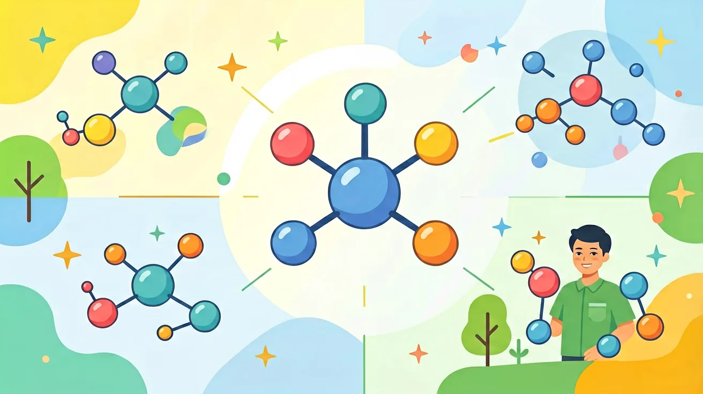

真实情境
塑料瓶变形记
小张发现，家里的塑料瓶在夏天会变得柔软，而冬天则变得坚硬。他好奇这种现象是否与塑料分子的结构有关，于是决定探究分子形状如何影响物质性质。
已有经验
学生已经知道物质由分子构成，分子间存在相互作用力
真正卡点
分子形状对物质性质的具体影响机制
本课任务
探究分子形状如何影响塑料的软硬程度
1. 为什么水分子是极性分子而二氧化碳是非极性分子？2. 举例说明分子形状如何影响日常材料的性能。3. VSEPR理论中，孤对电子对分子形状有何特殊影响？
1. 预测SF₄分子的几何形状并说明理由（硫有6个价电子）。2. 比较乙醇（C₂H₅OH）与二甲醚（CH₃OCH₃）的沸点差异。3. 设计实验验证CHCl₃与CCl₄的极性差异。
误区1：认为所有含极性键的分子都是极性的（如CCl₄）。错因：忽视对称性对偶极矩的抵消作用。诊断：通过绘制矢量合成图分析各键极性是否抵消。误区2：混淆杂化类型与电子对数（如误将H₂O的sp³杂化等同于四面体形状）。诊断：强调孤对电子占据杂化轨道但不参与几何构型。
设计任务：探究臭氧（O₃）的极性与其V形结构的关系。要求：①用VSEPR理论分析中心氧原子的电子对排布；②绘制偶极矩矢量合成图；③解释其比O₂更易溶于水的原因。
先独立作答，再点选项查看对错与错因。
下列哪种分子形状最可能导致物质在常温下呈现固态？
为什么聚乙烯塑料在高温下会变软？
下列哪种塑料最适合制作耐高温容器？
塑料的软硬程度主要取决于分子间的____。
答案：作用力
分子间作用力越强，物质越硬
聚乙烯分子呈____结构，这使得它具有一定的柔韧性。
答案：链状
链状结构使分子间可以相对滑动
关于分子形状对物质性质的影响，下列说法正确的是？
设计实验探究温度对不同类型塑料软硬程度的影响
❓ 为什么同样是碳原子，石墨软得能写字，钻石却硬到能划玻璃？
❓ 水分子为啥是V字形不是直线？这个形状对生活有啥影响？
❓ 塑料瓶一捏就扁，为啥玻璃瓶捏不动？形状在偷偷搞事情吗？
学完这一课，这些问题你都能自信地回答。
✅ 需检查中心原子是否含孤电子对（如O₃）
💡 忽视孤电子对导致电子云分布不对称
✅ 实际需平衡孤电子对与成键电子对的排斥（如H₂O 104.5°）
💡 未理解空间位阻最小化原则
口诀：孤对斥力大，键角被压垮；对称无极性，形状定天下
类比：分子像积木，不同拼法决定房子稳定性
And：学生知道分子由原子组成
But：但不懂原子排列方式为何影响性质
Therefore：本模块揭示空间结构的关键作用
分子形状由原子间的键角和键长决定。以水分子为例：两个O-H键形成104.5°的夹角，像米老鼠耳朵。这种V型结构导致水分子一端带正电，另一端带负电（极性），所以能溶解食盐但推不开食用油。若变成直线型180°，水就失去溶解能力了。
🌍 微波炉加热食物时，水分子在电磁场中快速旋转摩擦生热。若水分子是对称的球型，就无法被微波激活，你的便当永远热不了。
哪种分子形状会导致物质熔点升高？
And：学生理解静态分子形状
But：未意识到形状变化会引发性质剧变
Therefore：本模块展示动态变形的化学魔法
当分子形状因外界条件改变时，性质会突变。比如血红蛋白：正常时像四个连在一起的蘑菇，能结合4个氧分子（每个结合点间距3.4Å）。但遇到一氧化碳后，铁原子被拽出平面0.3Å，整个蛋白扭曲变形，失去载氧能力。这种0.3Å的位移就能让人窒息。
🌍 防晒霜里的氧化锌纳米颗粒，原本是白色粉末。当粒径缩小到30纳米以下时，颗粒形状趋近球形，突然变成透明状，这才不让你涂成京剧脸谱。
哪种情况会使石墨烯导电性消失？
